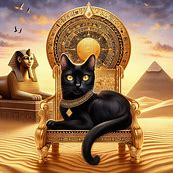

Los gatos han sido compañeros del hombre desde hace miles de años. Se cree que fueron domesticados por primera vez en el antiguo Egipto.
Existen muchas razas de gatos, cada una con sus propias características únicas. Algunas de las más populares incluyen el Siames, el Persa y el Maine Coon.
Los gatos son conocidos por su independencia y su habilidad para cazar pequeños animales como ratones y pájaros.
A pesar de su naturaleza independiente, los gatos pueden formar lazos afectivos muy fuertes con sus dueños.
Una curiosidad de los gatos es su capacidad para caer de pie, gracias a su reflejo de enderezamiento.
Los gatos comunican mucho con su lenguaje corporal, utilizando su cola, orejas y bigotes para expresarse.
Además de ser mascotas adorables, los gatos ofrecen beneficios para la salud de sus dueños, como la reducción del estrés y la ansiedad.